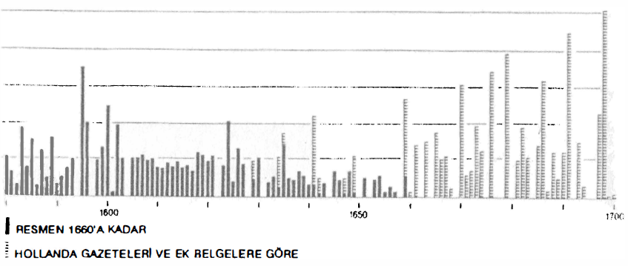

Ağlar ve akımlar bir sistem resmetmektedirler. Tıpkı bir demiryolundaki rayların, elektrik hatlarının, vagonların, personelin bütünü gibi. Her şey hareket için ayarlanmıştır. Fakat, hareket bizatihi bir sorun olarak ortaya çıkmaktadır.
Açıktır ki, malın yer değiştirebilmesi için, yolculuğu esnasında fiyatının artması gerekir. Bu benim ticari artık değer olarak adlandırdığım şeydir. Acaba bu, istisnası olmayan bir kural mıdır? Evet veya hemen hemen. XVI. yüzyılın sonunda, bir İspanyol sekizlik sikkesi Portekiz’de 320 ve Hindistan’da 480 reis etmekteydi. XVII. yüzyılın sonunda, Le Mans imalathanelerinde, etamin kumaşın bir vure’ı üç riyal, İspanya’da 6 ve Amerika’da 12 riyal etmekteydi. Ve örnekler böyle sürüp gitmektedir. Bu durumun sonucunda, uzaktan gelen nadir malların şaşırtıcı fiyatları ortaya çıkmaktadır. 1500’e doğru Almanya’da bir libre safran (İtalyan ve İspanyol kökenli) bir atla aynı değerdeydi; bir libre şeker ise üç süt domuzu kadar etmekteydi; 1519’da Panama’da bir at 24,5 peso, Kızılderili bir köle 30 peso, bir kırba şarap 100 pesoydu. 1248’de Marsilya’da 30 metre Flandre yünlüsü, müslüman bir kölenin iki-dört katı arasında etmekteydi. Fakat Yaşlı Plinus bile Hind ürünlerinin, karabiber veya baharatın Roma’da üretim fiyatlarının yüz katma satıldıklarını işaret etmişti. Böylesine bir yol güzergâhının üzerinde, akımın dönmeye başlaması için, kârın kendi hareketinin maliyetlerini karşılayabilecek bir düzeyde gerçekleşmesinin şart olduğu açıktır. Çünkü bir malın alım fiyatına taşıma maliyeti eklenmektedir ve bu, dün özellikle yüksek olan bir kalemdir. 1318 ve 1319’da Champagne fuarlarından satın alınan ve Floransa’ya götürülen yünlüler için, vergi, ambalaj ve diğer masrafların da dahil olduğu taşıma harcaması (6 sevkiyat söz konusudur), alış fiyatının, “primo costo'nun 11,80; 12,53; 15,96; 16,05; 19,21; 20,34’dür. Bu masraflar, aynı güzergâh üzerinde ve aynı mal için, 1 ile 2 kat arasında değişmektedir. Onun için, bu yüzdeler nisbeten düşüktür: kumaşlar pahalı mallar olmanın yanı sıra, düşük ağırlıktadırlar. Yükte ağır, pahada hafif bir mal -buğday, tuz, tahta, şarap- ilke olarak, mutlak bir zorunluluk değilse -bu durumda da, zorunluluk taşımanın bedelini ödemektedir-, karayolları üzerinde uzun yolculuklar yapmamaktadırlar. Daha 1398’de bu ad altında ün kazanmış olan Chianti şarabı, ucuz bir şarap, hektolitresi bir florin olan bir “povero”dur. (Mal- voisie şarabı 10-12 florin etmektedir). Greve’den Floransa’ya taşınınca (27 km.) fiyatı % 25-40 artmaktadır; yolculuk Milano’ya kadar uzarsa, fiyatı üç katma çıkacaktır. 1600’e doğru bir şarap fıçısının La Vera Cruz’dan Mexico’ya taşınması, şarabın Sevilla’daki alış fiyatı kadar tutmaktadır. Daha sonraları bile, Cantillon’un döneminde “Burgonya şarabının Paris’e arabayla getirilmesi, çoğu zaman şarabın yerindeki fiyatından pahalıya malolmaktadır".
Bu eserin birinci cildinde, her zaman pahalı olan ve esnekliği bulunmayan bir taşıma sisteminin engelleri üzerinde durduk. Federigo Melis, XIV. ve XVI. yüzyıllarda, tekne gövdelerinin, buna bağlı olarak ambarlarının büyümesi ve ad valorem olarak yerleştirilme eğilimine giren artımlı tarifelerin hizmete sokulmasıyla, deniz taşımacılığı için gene de muazzam bir çabanın sarfedildiğini göstermiştir: böylece pahalı mallar, sıradan mallar için de kısmen ödeme yapmış olmaktadırlar. Fakat bu, genelleşmesi yavaş olan bir uygulamadır. XVI. yüzyılda Lyon’da, karayolundan taşımanın bedeli, malın ağırlığına göre hesaplanmaktadır.
Sorun tüccarın gözünde, her halükârda aynı olarak kalmaktadır: ona doğru bir yük gemisi veya bir araba, veyahut da hayvan sırtında gelen malın, bu yol esnasında öylesine bir değer kazanması gerekir ki, işlerin görülmeyen masraflarının dışında, taşıma maliyeti ve tüccarın ümid ettiği kârla artmış olan alış Fiyatını ödemeye olanak versin. Eğer bu olmayacaksa, parasını ve zahmetini riske sokması ne için olacaktır? Mal bu işi, az çok kolaylıkla başarmaktadır. Tabii ki “krali mallar" -bu, karabiber, baharat, kırmızböceğini ifade etmek için, Simon Ruiz tarafından kullanılan bir deyimdir; biz buna bir de sekizlik sikkeleri ekledik- için sorun yoktur: yolculuk uzundur, ama kâr garantilidir. Eğer bu malların rayiçleri umud ettiğim gibi çıkmazsa, beklerim; biraz sabırla her şey yoluna girecektir, çünkü alıcı hiçbir zaman eksik değildir. Her ülke, her dönem kendi “krali mallar”ına sahip olmuş, bunlar diğer mallardan daha yüksek ticari artık değerler vaad etmişlerdir.
Giambattista Gemelli Careri’nin birçok bakımlardan sürükleyici olarak okunan yolculukları, bu kuralı harika bir şekilde resmetmektedirler. Kârdan çok keyfi için 1694’te dünya turuna çıkan bu Napolili, uzun yolculuğunun masraflarım karşılamanın yolunu bulmuştur: varılacak yerde özellikle değer kazanacağı bilinen malları, bulunulan yerden satın almak. İran körfezindeki Benderabbas’tan “incir, şarap, hayat suyu... Çok kâr sağlayan ve Hind’e kurutulmuş veya sirkede korunmuş olarak götürülen tüm İran meyvaları... yüklenecektir; Yeni İspanya’ya gitmek üzere Manilla kalyonuna binilirken, Çin gümüşü edinilecektir: “Yüzde üç yüz kâr var” diye sır vermektedir. Ve işler böyle yürüyüp gitmektedir. Sahibiyle birlikte yolculuk yapan mal, onun için her adımda ürün getiren, yolcunun masraflarım ödeyen ve hatta ona, Napoli’ye döndüğünde, iyi kârlar sağlayan bir sermaye haline gelmektedir. Bundan aşağı yukarı bir yüzyıl önce, 1591’de, o da dünya turuna çıkmış olan Francesco Careletti, ilk ticari mal olarak, “krali mal” sayılabilecek, zenci köleleri seçmişti; bunları Sao Tome adasından satın alıp, sonra Hindler Carthagena’sında satmıştı.
Sıradan mallar için, işler tabii ki daha az kolaydır; ticari işlem ancak binlerce tedbir pahasına verimli olabilecektir. Teorik olarak, en azından başrahip Condillac gibi bir iktisatçı için, her şey basittir: uzak mesafeli mübadelelerin altın kuralı, bir malın bol olduğu bir pazarla, aynı malın nadir olduğu bir pazarı temasa geçirmektir. Uygulamada, bu koşullara hükmedebilmek için, tedbirli olunduğu kadar, haberli de olunmak gerekmektedir. Ticari mektuplaşmalar bunu aşırı bollukta kanıtlamaktadırlar.
1681 Nisanında, Livorno’da, Giambattista Sardi’nin dükkânındayız. Toskana’nın esas limanı olan Livorno, Akdeniz’e ve en azından Amsterdam’a kadar olmak üzere, Avrupa’nın tümüne geniş ölçüde açıktır. Bu sonuncu kentte Lucca kökenli olan Benjamin Burlamacchi bir kontuar yönetmekte, burada Baltık, Rusya, Hindler veya başka yerlerden gelen mallarla ilgilenmektedir. Doğu Hindler Kumpanyasının bir filosu kente gelmiş bulunmaktadır ve iki tüccarımız arasında bir mektuplaşma bağının kurulduğu sırada, tarçın fiyatları düşmektedir. Livornolu bu “krali mal" üzerinde bir operasyona girişmeyi düşünür. Projelerle dolu olarak Burlamacchi’ye yazar, bu işi “yalnızca kendi hesabına yapmayı” düşündüğünü, yani muhatabıyla paylaşmayacağını açıklar. Sonunda iş gerçekleşemez ve bu kez Burlamacchi ile ortaklığa hazır olan Sardi, Amsterdam’dan Livorno’ya götürülecek tek bir ilginç mal olarak, “vacchette’’yi, yani kısa bir süre sonra İtalya pazarlarını istila edecek olan şu Rus derilerini görmektedir. Bu 1681 yılında, bu deriler Livorno’da kurallara uygun bir şekilde kote edilmişlerdir bile; hatta bu kente, yanlarında havyar fıçıları olduğu halde, Arhangelsk’ten doğrudan gelmektedirler. Eğer bu deriler “güzel renkli, içi kadar dışı da iyi, geniş, ince ve 9-10 Floransa libresini geçmeyen ağırlıkta”ysalar, Burlamacchi bunlardan bir miktarını iki tekneye yükleyecektir (rizikoyu bölmek için); bunlar "de buona dijesa, che venghino can buoni convoglio" teknelerdir ve bu iş, kuzey seyrüseferinin kış mevsiminde kapanmasından önce olmaktadır. Amsterdam’da 12’ye satılan deriler, Livorno piyasasında 26,5 ve 28’e, yani iki katından fazlaya kote edilmişlerdir. Sardi, Livorno’daki maliyetin 24’ü aşmaması gerekir diye yazmaktadır; böylece % 10’luk bir kâr hesaplamaktadır. 6 deri dengi Texel’e yüklenmiştir ve Burlamacchi, Sardi’nin talimatına göre, bir Venedik bankerine bir senet çekerek, alış maliyetinin yarısını ödeyecektir, Demek ki her şey hesaplanmıştır. Ama bu iş sonunda parlak olmayacaktır. Önemli miktarda sevkiyat, Mayıs 1682’dc Livorno fiyatlarını 23’e düşürecek; vasat kaliteden olduğu anlaşılan deriler yavaş satılacaktır. 1681 ve 1682’de birçok işleme girişmiş olan -özellikle Cenova sahillerinin zeytinyağ ve limonunun ihracatı- ve Amsterdam ve İngiltere ile geniş bir ticaret sürdüren, bazen de tek başına, bütün bir gemiyi malla dolduran Sardi firması için, kuşkusuz pek fazla önemli değildir. Fakat bu olayın yararı, uzaktan öngörmenin ve ticari artık değeri örgütlenmenin ne kadar zor olduğunu göstermektir.
Bu ileriye dönük hesapları yapmak, yeniden yapmak, girişmeden önce işlem hakkında defalarca düşünmek, bir tüccarın bitmez tükenmez işidir. Amsterdamlı metodik bir toptancı, Fransa’da bir iş yapmayı düşündüğünde, Rouen’daki komisyoncu Dugard ve oğlu firmasına “cevap olarak bana, sizde en çok satan malların fiyatlarını bildirmenizi ve aynı zamanda tüm maliyetleri kapsayan bir satış hesabı göndermenizi... Bana özellikle balina dişi, kırmızı balina yağı, kökboya, kurutulmamış taze üzüm, İzmir pamuğu, sarı tahta, çelik tel... yeşil çay rayiçlerini bildiriniz” diye yazmaktadır. Bir Fransız tüccar da kendi cephesinden (16 Şubat 1778), bir Amsterdamlı tüccardan bilgi almaktadır. “Hayat suyunun sizde satış biçimini bilmediğim için, bana 30 velte’in Fransız parasıyla ne ettiğini bildirir misiniz? Hesabımı buna göre yapacağım ve bundan sonra bir avantaj görürsem, size bir parti gönderip göndermemeye karar vereceğim...”.
Ticari artık değerin, her ticari mübadelenin zorunlu teşvikçisi olduğu, o kadar kendinden bellidir ki, bunun üzerinde ısrar etmek saçma olacaktır. Ancak bu durum, gözüktüğünden daha çok şey açıklamaktadır, özellikle, sözümona hayat pahalılığının kurbanı olduğu söylenilen ülkeleri otomatikman avantajlı kılmakta değil midir? Bunlar en parlak fenerler, öncelikli cazibe merkezleridir. Mal bu yüksek fiyatlar tarafından çekilmektedir. İç Denize egemen olan Venedik, uzun süre hayat pahalılığı içinde yaşamıştır ve XVIII. yüzyılda hâlâ yaşamaktadır. Hollanda pahalı bir ülke haline gelmiştir: insanlar, özellikle de fakirler, hatta daha az fakirler, burada zor belâ yaşayabilmektedirler. İspanya, V. Carlos döneminden beri, korkunç derecede pahalı bir ülkedir: bir Fransız seyyah (1603) “İspanya’da para hariç, her şeyin pahalı olduğuna dair atasözünü burada öğrendim" demektedir. XVIII. yüzyılda durum hâlâ böyledir. Fakat İngiltere kısa bir süre sonra, kınlamaz bir rekorun sahibi olmuştur: burası en mükemmelinden, yüksek gündelik harcamalar ülkesidir: bir ev kiralamak, bir araba kiralamak, sofra donatmak, otelde kalmak, bu ülkedeki yabancılar için iflas ettiricidir. Daha 1688 devriminden önce ele gelen bu hayat pahalılığı ve ücret yükselişi, acaba oluşmakta olan İngiliz önceliğinin bedeli, veya işareti veya koşulu mudur? Yoksa bunlar herhangi bir önceliğin sonuçları mıdır? 1599-1597 arasında İtalya, Fransa, Alçak Ülkeler, Almanya, Polonya’da dolaşmış olan ve bu arada iyi bir gözlemci olan İngiliz seyyahı Fynes Moryson, şu şaşırtıcı düşünceye sahiptir: “Polonya ve İrlanda’da gerekli tüm malların garip bir şekilde ucuz olmasına karşılık, beyaz madenin buralarda kıt olduğunu ve çok daha değerli olduğunu gördükten sonra, bu gözlemler beni ortak inancın tamamen tersi bir kanıya yöneltti, yani bir devletin gelişmekte olduğunu anlamak için, bu maddelerin pahalılığından daha kesin bir işaret yoktur”. Pinto’nun ileri sürdüğü de budur. Bu aynı zamanda, Quesnay’nin paradoxe’udur: “Bolluk ve pahalılık zenginliktir’’. 1787’de Bordeaux’dan geçen Arthur Young şöyle kaydetmekteydi: “Ev ve daire kiraları her gün artıyor; yükselme, (1783) barış(ın)dan beri önemli miktarda, üstelik tam da, birçok yeni evin yapıldığı ve yapılmakta olduğu sırada, ama bu inşaatlar genel fiyat yükselişiyle çakışmaktadır: hayat pahalılığının on yılda % 30 arttığından yakınılıyor. Refahın gelişmekte olduğunu, bundan daha açık olarak hiçbir şey kanıtlayamaz”. Bu daha 20 yıl önce, 1751’de genç başrahip Galliani’nin para hakkındaki kitabında söylediği şeydir: “Malların fiyatlarının yüksek olması, en büyük zenginliklerin nerede olduğunu bilmek için en iyi rehberdir”. Ve Leon Dupriez’in zamanının “evrimleri ayak sürüyen ülkeler”dekilere nazaran daha yüksek bir ücret ve fiyat düzeyine sahip olan, “yükselmekle olan ülkeler” hakkııulaki fikirleri akla gelmektedir. Fakat, bu cins düzey farklılıklarının nedenlerine gelmemiz gerekmektedir. Yapı, örgüt üstünlüğü, çabuk söylenmiş lâflar olacaktır. Aslımla dünya yapısından söz etmek gerekecektir.
Tabii ki, İngiltere’nin istisnai kaderini, bu temel gerçeğe getirmek cazip olacaktır. Yüksek fiyatlar, yüksek ücretler, ada ekonomisi için yardımdır, ama aynı zamanda da engeldir. Temelde, düşük fiyatlı istisnai bir yün üretiminden teşvik gören yünlü kumaş endüstrisi, bu güçlükleri aşmakladır. Fakat acaba, diğer endüstriyel faaliyetler için aynı durum söz konusu mudur? XVIII. yüzyılın sonundaki makina devri- minin, harika bir çıkış kapısı olduğunu kabul edelim.
Mübadele için ilk teşvik, tabii ki arzdan ve talepten, iyi bilinen aktörler olan, fakat bayağılıklarının farketmeyi ve tanımlamayı hiç de kolaylaştırmadığı arzlardan ve taleplerden gelmektedir. Bunlar kendilerini yüzlerce ve binlerce olarak sunmaktadırlar. Zincir oluşturmakta, birbirlerinin elinden tutmakta, akımların elektriği olmaktadırlar. Klasik ekonomi, her şeyi onlarla açıklamakta ve bizi, arz ve talebin sürükleyici hasımlar olarak, karşılıklı rolleri hakkında, çıkışı olmayan tartışmalara da sürüklemektedir. Bu tartışmalar günümüze kadar sıçramakta ve ekonomi politikasının güdüleyicileri arasındaki yerlerini hâlâ korumakladırlar.
Bilindiği üzere, talep olmadan arz ve arz olmadan talep yoktur: bunların her ikisi de, ihdas ettikleri ve onları ihdas eden mübadeleden doğmaktadır. Aynı şeyi alış-verişler, ticari gidiş-gelişler, bağış ve karşı bağışlar, hatta emek ve sermaye, tüketim ve üretim -tüketim talep tarafını, üretim de arz tarafını oluşturmaktadır- için de söylemek mümkündür. Turgot’ya göre, eğer sahip olduğumu arzediyorsam, bunun nedeni, elimde olmayan şeyi arzulamam ve aynı anda talep etmemdir. Eğer sahip olmadığım şeyi talep ediyorsam, karşılığını vermeye, şu kadar mal, hizmet veya para sunmaya kararlıyımdır. Turgot, demek ki dört unsur vardır diye özetlemektedir: “sahip olunan iki şey, arzulanan iki şey". Günümüzün bir iktisatçısı “kendiliğinden anlaşılacağı üzere, her arz ve her talep bir karşılığı varsaymaktadır" demektedir.
Bu farkına varışları, hemen akıl oyunları veya saflıklar olarak değerlendirmeyelim. Bunlar yapay farkları ve akıl yürütmeleri devre dışı bırakmaya yaramaktadırlar. Bunlar, daha önemli olanın arz mı, yoksa talep mi olduğunu veya sonuçta aynı şey olan, bunlardan hangisinin primum mobile rolünü oynadığını kendine sorana, tedbirli olmayı öğütlemektedirler. Bu sorunun gerçek cevabı yoktur, ama bizi mübadele sorunlarının kalbine götürmektedir.
Pierre Chaunu tarafından çok iyi incelenmiş olan, Carrera de Indias örneğine, zihinsel olarak sıklıkla başvurdum. 1550’den sonra her şey büyük ölçekte ve mekanik terimlerle resmedilmiş olarak açıktır: Sevilla’dan Kanarya adalarına, Amerika limanlarına, Florida’nın güneyinde Bahamalar boğazına, sonra yeniden Azorlara ve Sevilla’ya olmak üzere, bir kolan saatin akrep ve yelkovanı yönünde dönmektedir. Seyrüsefer bir akımı somutlaştırmaktadır. Pierre Chaunu’ya göre hiçbir kuşku yoktur: XVI. yüzyılda “konjonktürel olarak sürükleyici hareket” İspanya’dan Amerika’ya “gidiş hareketidir”. Chaunu kesinleştirmektedir: “Hindlere yönelik Avrupa mallarının beklenmesi, Sevillalıların yola çıkış anındaki başlıca meşguliyetlerinden biridir". Idria cıvası, Macaristan bakırı, Kuzeyin inşaat malzemeleri ve gemilerin tüm yükü olarak yünlü ve bez balyaları. Ve hatta başlangıçta zeytinyağ, un, şarap; bizzat İspanya tarafından sağlanan mallar. Demek ki bu ülke, geniş okyanusaşırı hareketi canlandırmakta tek başına değildir, Avrupa ona yardım etmekte, filolar geri döndüğünde de, nemadan payını istemektedir. Fransızlar, kendi sevkiyatları olmazsa, sistemin İşleyemeyeceğini düşünmektedirler. Başlangıçtan itibaren ve 1568’e kadar, Yeni Dünya ile olan uzun ve yavaş ticari işlemleri kredili olarak finanse eden Cenevizliler de, vazgeçilmezdirler ve diğer birçok başkaları da. Yola çıkış esnasında, Sevilla’daki gerekli hareket, demek ki Batı’nın çok sayıda gücünün seferber edilmesidir. Bu hareket, kaynakları itibariyle, İspanya’ya geniş ölçüde dışsaldır; bu da aynı anda hem Cenovalı işadamlarının parasını, İdria maden galerilerini, Flaman dokuma tezgâhlarını ve Brötanya bezlerinin satıldığı şu 20 kadar yarı-köylü pazarı gerektirmektedir. Karşı-kanıt: Sevilla’da ve daha sonra Cadiz’de, her şey “yabancıların” keyfine uyarak durmuştur. Kural sonsuza kadar sürmektedir: 1730 Şubatında, bir gazetenin dediğine göre, “kalyonların yola çıkmaları, yabancıların ters rüzgârlar yüzünden henüz Cadiz’e ulaşamayan büyük miktardaki mallarını yüklemelerine fırsat vermek için, gelecek Mart ayına kadar ertelenmiştir”.
Acaba bu nedenden ötürü, motor hareket, primum mobile mi demek gerekir? İlke olarak, bir kolan, herhangi bir noktasından itibaren harekete geçirilebilir -harekete geçirilebilir veya tersine, durdurulabilir-. Öte yandan, 1610 veya 1620’lerdeki ilk uzun yavaşlama, görünüşte Amerikan gümüş madenlerinin üretimindeki bir düşüşten kaynaklanmıştır. Belki azalan verimler “yasası” yüzünden, kesinlikle de, gerekli emek gücünü sağlayan Kızılderili nüfustaki azalmadan. Ve 1660’lı yıllar civarında, her şey Polosi’de ve Yeni İspanya gümüş madenlerinde yeniden işlemeye başladığında -Avrupa henüz ısrarlı bir duraklama içindeymişe benzerken-, atılım Amerika’dan, geneksel mangallarını yeniden kullanan yerli madencilerden gelmiş ve hatta bu durum, büyük “modern” maden tesislerinin yeniden harekete geçmelerinden önce meydana gelmiştir. Kısacası, ilk rol (olumsuz, sonra olumlu), en azından iki kere, Atlantiğin öte tarafında, Amerika tarafından oynanmıştır.
Michel Marineau Hollanda gazetelerinin ve Madrid’deki yabancı elçilerin verdikleri yeni rakamların eleştirel bir kullanımıyla, XVII. yy/dahi değerli maden ithalat eğrisini yeniden çizmiştir. 1620’den itibaren maden gelişlerinin sahanlığı, sonra düşüşü ve 1660’dan itibaren hızlı yükselişi açıkça görülmektedir, (ölçek: 10, 20, 30, ... milyon pezo).
Fakat burada bir kural söz konusu değildir. İngilizler 1713’ten sonra, asiento ayrıcalığı ve kaçakçılıkla, İspanyol Amerika’sı pazarına açılınca, burayı kısa bir süre sonra kendi mallarına, özellikle de yünlü kumaşlarına boğacaklar, bunları Yeni İspanya ve başka yerlerin perakendecilerine hem krediyle, hem de büyük miktarlarda vereceklerdir. Para olarak geri dönüş buradan çıkmaktadır. Bu kez İngiliz forcitıg’i, güçlü bir etki olarak okyanusun bu tarafının sürükleyicisidir. Defoe Portekiz’deki aynı süreci, safçasına, onun “force a vend abroad” olmasıyla açıklamaktadır, arzını dışarıda zorla dayatmak. Ama, yünlülerin Yeni Dünya’da uzun zaman satılmadan kalmamaları da gerekmektedir.
Ama bu arada, Turgot’nun dörtlü şemasına başvurmadan, arz ve talep nasıl ayırdedilebilir? Sevilla’da, yola çıkacak filonun ambarlarına yığılan mal kitlesi ve tüccarlar, ancak bu tüccarların para ve kredi ihtiyaçlarını tüketmeleri pahasına toplanabilmektedirler veya bunlar umutsuzluk içinde, dışarıya senet çekmektedirler (her hareketin arefesinde ve bir filonun dönüşüne kadar, piyasada ödünç alınacak tek bir maravedis bile yoktur!); Batı’nın çok ve çeşitli üretiminin atılım yapmasına neden olan bu arz, hiç de gizli olmayan ısrarlı ve emredici bir talebe eşlik etmektedir: sermayelerini bu ihracata yatırmış olan piyasa ve tüccarlar, beyaz maden dönüşleriyle, kendilerine ödeme yapılacağını beklemektedirler. Aynı şekilde Vera Cruz’da, Carthagena’da veya Nombre de Dios’ta (daha sonra Porto Bclo’da) Avrupa mallarına, onun toprak ve endüstri ürünlerine olan talep (genelde çok pahalıya ödenmektedir), aşikâr bir arzın refakatindedir. 1637’de Porto Belo fuarında, tıpkı taş gibi yığılmış, gümüş külçeleri görülmektedir. Bu “arzulanan şey” olmaksızın, tabii ki hiçbir şey yürümeyecektir. Burada da arz ve talep eşanlı olarak işbaşındadırlar.
Acaba iki arzın -yani birbirleri karşısında resmolan iki üretimin- iki talebe, iki arzuya, “sahip olmadığım şey”e üste geldiklerini söyleyebilir miyiz? Acaba bunların ancak öngörülen ve öngörülebilen taleplere göre varolduklarını söylemek gerekmez mi?
Sorun her halükârda, yalnızca bu ekonomik terimlerle ortaya çıkmamakladır (üstelik arz ve talep “tamamen” ekonomik olmanın uzağındadırlar, ama bu başka bir sorundur). Açıkçası, güç terimleri içinde de ortaya konulması gerekmektedir. Bir komuta ağı, Madrid’den Sevilla’ya ve ötelerde, Yeni Dünya’ya doğru uzanmaktadır. Hindler yasalarıyla, leges de Indias'la dalga geçmek kuraldır, sonuçta bunlar, okyanusun öteki tarafındaki Katolik kralların hakiki otoritelerinin bir görüntüsünden ibarettirler. Ama bu uzak topraklarda her şey onların isteğine göre olmamaktadır. Kralın iradesi gene de bazı amaçlara ulaşmaktadır, zaten o, yalnızca kendi çıkarlarını düşünmeyen krallık memurları tarafından somutlaştırılmış gibidir. Quint gene de kral adına toplanmakta ve belgeler geri dönüşlerde, tüccarlarınkinin karşısında, bunun da payını her zaman belirtmektedirler. İlli bağlantılar esnasında bu pay nisbeten büyüktü, gemiler deyim yerindeyse safrayla dönmekleydiler, ama bu safra gümüş külçelerden oluşmaktaydı. Ve iskân, henüz fazla miktarda Avrupa malını cezbedecek kadar ilerlememişti. O sıralar mübadeleden çok sömürü vardır, daha sonraları da durmayan ve yok olmayan bir sömürü. Bir Fransız raporu 1703’e doğru “İspanyollar (1701’de patlayan İspanya Veraset Savaşından önce) kırk milyonluk (livre lournois) mal götürüp, 150 milyonluk alım, gümüş ve diğer mallar getirmeye alışmışlardı” demekledir -her beş yılda bir-. Bu rakamlar tabii ki, yalnızca mübadelelerin gayri safi değerini temsil etmektedirler. Fakat gerçek kârların kitlesini, gidiş ve dönüş masraflarını da hesaba katarak elde etmek için, hangi düzeltmeler yapılırsa yapılsın, bu eşitsiz mübadelelerin, böylesine bir eşitsizliğin öngerektirdiği tüm ekonomik ve siyasal yansımalarıyla birlikte, açık bir örneğidir.
Tabii ki sömürü, eşitsiz ve zorla mübadelenin olması için, bir kralın veya bir devletin işe karışması gerekmez. Manilla kalyonu, ticari bakış açısından istisnai bir akım kapanmasıdır, lakat burada yanılgıya düşmemek gerekir: egemenlik burada Mexicolu tüccarların lehine oynamaktadır. Kısa süreli Acapulco fuarlarının aceleci ziyaretçileri olan bu tüccarlar, aylar ve yıllarca mesafeden, Manilla tüccarlarını (bunlar da intikamlarını Çinli tüccarlardan almaktadırlar) ayaklarının altında tutmakladırlar -tıpkı Hollanda tüccarlarının Livornolu komisyoncu tüccarları, uzun süre ayaklarının altında tuttukları gibi-. Böylesine güç ilişkileri olduğunda, “talep” ve “arz” terimleri tam olarak ne ifade ederler ki?
Bunlar söylendikten sonra, talebi içinde yer aldığı bağlamdan, bir an ayırmakta artık sakınca olmadığını düşünüyorum. Şu anda azgelişmiş ülkelerin durumuna eğilen iktisatçıların işaretleri, beni bu konuda cesaretlendirmektedir. Ragnar Nurkse çok kesindir: eğer motor harekete geçirilmek isteniyorsa, talebin ipi çekilmelidir. Yalnızca üretimi artırmayı düşünmek, başarısızlıklara yol açacaktır. Bugünün üçüncü dünyası için geçerli olanın, Eski Rejim ekonomisi ve toplumları için ipso jaclo geçerli olmadığını biliyorum. Fakat karşılaştırma düşünce malzemesi sunmaktadır ve bu her iki yönde de olmaktadır. Acaba Quesnay’nin şu farkına varışı (1766) yalnızca dün için mi geçerlidir? “isledikleri kadar tüketemeyecek tüketiciler”in hiçbir zaman kıtlığı çekilmemektedir: “yalnızca kara buğday ekmeği yiyen ve su içen, ama beyaz ekmek yemek, şarap içmek isteyen; et yiyemeyip, yemek isteyen; yalnızca kötü elbiseleri olup, iyilerine sahip olmak isteyen; ısınmak için odunları olmayıp, satın almak isteyen vb. tüketiciler”. Bu arada, bu tüketici kitlesi sürekli olarak büyümektedir. Demek ki, her zaman mutatis mutandis bir gizil “tüketim toplumu” bulunmaktadır diyebilirim. Yalnızca, yüzde doksanının düzenli olarak ve kolaylıkla yuttuğu gelirleri, iştahı sınırlamaktadır. Fakat bu insanların çoğu için, kendini aşılamaz bir sınır olarak hissettirmektedir. XVIII. yüzyıl Fransız iktisatçıları, bugünün üçüncü dünya iktisatçıları gibi, bu sınırın bilincindedirler. Ve Boisguilbert'in daha o sıralar “çöküntü, gelirin çökmesidir" dediği gibi, gelirleri ve tüketimi artırmaya yarayan çarelerin peşindedirler. Kısacası, talebi artırmanın çarelerini aramaktadırlar.
Ama tabii ki talep vardır, talepçik vardır. “Süsleme lüksü” için olan talebe karşı olan Quesnay “geçimlik tüketimi” savunmaktadır, yani “üretken sınıf”ın gündelik talebinin genişletilmesinden yanadır, Yanılmamaktadır: bu talep, sürekli, hacimli, zaman içinde baskı ve isteklerini sürdürmeye, yani talebe hatasız rehberlik etmeye ehil olduğu için, esastır. Bu talepteki her şişme, büyüme için önceliklidir.
Bilindiği üzere, temeldeki bu talepler, eski tercihlerden, insanın kaçınamayacağı ihtiyaçlardan -tuz, tahta, dokumalar...- türemektedirler (ya buğday, ya pirinç, ya mısır) ve bunların türev ve sonuçları çok şaşırtıcıdır. Kitlesel ve esas olan talepleri ve onlara cevap veren rekorları, tarihleri çok fazlasıyla nadir olarak yapılmış olan bu ihtiyaçlardan hareketle yargılamak gerekmekledir. Böylece Çin’in İmparatorluk kanalının uzun yolundan, kuzeye, Pekin’e kadar, güney eyaletlerinin pirinç, tuz ve tahtasını taşımış olması; Hind’de Bengal pirincinin deniz yolundan, veya pirinç ve buğdayın karadan binlerce öküzlük kervanlarla taşınması; Batı’nın her yerinde buğday, tuz, tahtanın dolaşması; Languedoc’taki Peccais tuzunun tüm Rhöne nehrini aşıp, yukarı çıkarak Seysscl’e kadar ulaşması; Cadiz, Selubal ve Bourgneuf tuzlarının Atlantik’ten Kuzey Denizi’ne ve Baltığa gitmeleri birer rekordur. Öylesine ki, XVI. yüzyılın sonunda, Birleşik Eyaletler’in tuz iaşesini kesmek, onu dizlerinin üstüne çökertmek demektir. İspanya bunu yalnızca hayal etmekle yetinecektir.
Kitlesel kullanımını birinci cildimizde işaret ettiğimiz oduna gelince, Avrupa’nın veya Çin’in tüm nehirleri boyunca can verdiği trafiği, hayran olmadan hayal etmek mümkün değildir: sallar, odun dizileri, yüzmeye terkedilen kütükler, varışlarında tahrip edilen tekneler (Loire’ın ve diğer birçok su yolunun aşağısında olduğu gibi), kereste ve kütüklerle yüklü deniz tekneleri, hatta Batıya veya Güneye, Kuzeyin kıyas kabul etmez gemi direklerini taşımak için özel olarak inşa edilmiş olanları. Odunun kömür, akaryakıt, elektrik tarafından yerinden edilmesi, daha bir yüzyıldan uzunca bir süre, sürekli bir uyum dönemini gerektirecektir. Avrupa’nın temeldeki uygarlığının içinde yer alan şarap için, hiçbir süreksizlik söz konusu değildir. Pierre Chaunu, şarap filolarının Eski Rejim ekonomilerinde, XVIII. yüzyılda, daha da iyisi XIX. yüzyıldaki kömür taşımacılığının yerini tuttuğunu söylerken, sadece biraz abartmaktadır. Ağır, nisbeten ucuz olan buğday da, kendi cephesinde olabildiğince az dolaşmakta ve bunu hemen her yerde yetiştiriliyor olması belirlemektedir. Fakat kötü bir hasat kıtlığa yol açarsa, açıklar yerleşik hale gelirse, o zaman çok büyük yolculuklar yapmaktadır.
Bu kitlesel, ağır kişilerin yanında, lüks mal narin, ama parlak bir kişidir ve çok gürültü çıkartmaktadır. Para ona doğru koşmakta, emirlerine uymaktadır. Böylece, ona özgü trafikler ve keyfine göre meydana gelen sıçramalarla, bir süper-talep vardır. Kendine karşı asla çok sadık olmayan arzu, ihanet etmeye fazlasıyla hazır moda, sahte ve emredici “ihtiyaçlar” yaratmaktadırlar; bunlar değişkendir, ama yerlerini ancak kendileri kadar gereksiz tutkulara bırakmak üzere kaybolmaktadırlar: şeker, alkol, tütün, çay, kahve. Ve evlerde gündelik kullanım için hâlâ çok miktarda iplik eğrilmesine ve dokuma yapılmasına rağmen, tekstil alanına, yani en ilerlemiş ve en fazla ticarileşmiş sektörlere taleplerini dikte eden de moda ve lüks olmaktadır.
Zenginler XV. yüzyılın sonunda altın ve gümüş işlemeli kumaşları, ipeklilerin lehine olmak üzere, terk etmişlerdir. Yaygınlaşan ve bir ölçüde de avamlaşan ipekli kumaş, her türden toplumsal ilerlemenin işareti olacak ve ipekli imalathanelerinin Avrupa’nın tümünde gelişmesinden önce, yüzyıldan fazla bir süre için, refahın İtalya boyunca son bir atılımına neden olacaktır. Gene her şey, İngiliz tipi yünlü kumaşlarla birlikte, XVII. yüzyılın ilk on yılları esnasında, tamamen değişecektir. İzleyen yüzyılda ise, “boyalı bezler”in sırası aniden gelmiştir; bu bezler önce Hind’den ithal edilen, sonra Avrupa’da taklid edilen basma pamuklulardır. Fransa’da yetkililer, ulusal imalathaneleri bu ince kumaşların istilasına karşı korumak için umutsuzca mücadele etmişlerdir. Fakat ne gözetimler, ne müsadereler, ne eczalar, ne de öğüt vericilerin sınır tanımayan hayal güçleri buna çare olabilmiştir: örneğin Paris’te Bourdonnais caddesi tüccarlarından olan Brillon de Jouy, “Hind kumaşı giyinmiş kadınları sokak ortasında... soymak için” herbiri 500 livre olan üç exempt ödemeyi önermekleydi; veya eğer bu önlem çok köktenci görülürse, “fahişeleri Hind kumaşıyla gülünç bir şekilde giydirdikten sonra, selâmate ulaşmada örnek olsun diye, bunları balkın önünde soymayı önermekteydi. 1710’da Genel denetici Desmaretz’e verilen bir rapor, bu kampanyalardan ciddi kaygılar duymaktadır: hayat çok pahalı, para kıl, hükümet tahvilleri çok uygunsuz ve kullanışsız iken, insanlar gardroplarını yenilemeye mi zorlanacaklardır? Zaten modaya karşı ne yapılabilirdi ki? En fazlasından, Daniel Dcloe gibi onunla alay etmek. Deloe 1708’de Weekly Review’daki bir makalesinde şöyle yazmaktaydı: “Kaliteli insanların, çok kısa bir süre önce oda hizmetçilerinin, kendileri için çok bayağı buldukları Hind halılarıyla süslendikleri görülüyor, Hind kumaşları terfi ettiler, döşemeden sırtlarına yükseliyorlar; kilimken eteklik haline geldiler ve bizzat Kraliçe bile, o sıralar Çin ve Japon ipeklileri giymeyi seviyordu. Ve hepsi bu kadar değil, çünkü evlerimiz, çalışma odamız, yatak odamız da bunlar tarafından istila edildiler: perdeler, yastıklar, iskemleler ve bizzat yataklara varana kadar her şey Hind kumaşından”.
İster gülünç olsun, isler olmasın, ısrarlı, çoklu, yoldan çıkartıcı bir talep olan moda her zaman galip gelmektedir. Fransa'da 35 taneden fazla kararname “insanları kaçakçılığın (Hind kumaşları için) bu inadından kurtarmayı başaramamıştır; öte yandan malların müsaderesinin ve bunları alan ve satanlara uygulanan 1000 ekülük cezanın dışında, 15 Aralık 1717 kararnemesiyle müebbed kürek gibi bedeni cezalar getirilmesine rağmen, büyük çapla başarısız olunmuştur”. Yasak sonunda, 1759’da kaldırılmış ve Hind pamukluları endüstrisi krallıkta kurularak, çabucak İngiltere, İsviçre Kantonları veya Hollanda’daki -hatta Hindistan’daki- benzerleriyle rekabete girişmiştir…
Endüstri öncesi dünyayla ilgilenen iktisatçılar bir konuda anlaşmaktadırlar: arz bu dünyada küçük bir role sahiptir. Esneklikten yoksundur; herhangi bir talebe çabuk uyum sağlama yeteneğine sahip değildir. Ama tarımsal arz ile endüstriyel arz arasında ayırım yapmak gerekmektedir.
Bu dönemde ekonominin esası tarımsal faaliyettir. Kuşkusuz yeryüzünün bazı bölgelerinde, özellikle İngiltere’de, tarlaların verimliliği, eşanlı bazı teknik ve toplumsal faktörlerin sayesinde, “devrimci bir şekilde" artmışlardır. Fakat tarihçiler İngiltere’de bile, adanın ekonomik atılımını 1730-1750 arasındaki iyi hasat dizisinin raslantısıyla, geniş ölçüde mümkün olabildiğini sıklıkla farketmişlerdir. Tarımsal üretim, genel olarak hareketsizlik alanıdır.
Buna karşılık, öncelikle endüstrininki, sonra da ticaretinki olmak üzere iki alan vardır ki, makina çağına kadar, nüfusun çok büyük bir oranının, küçük tarımın yarı-kendine yeterliği içinde yaşayacak olmasına, aynı anda hem içsel, hem de dışsal olan bir tavanın biraz canlı her atılımı sınırlandırmasına rağmen, bu alandaki gelişme erkenden göze görünür hale gelmiştir. Yalnızca bir büyüklük sıralamasını hedefleyen, tartışmalı değerlendirmelere dayanarak, endüstrinin hacminin Avrupa’da 1600 ilâ 1800 arasında, en azından beş kat arttığını ileri süreceğim. Dolaşımın değiştiğine, hizmetlerini genişlettiğine de inanıyorum. Ekonomilerin dar boğazdan çıkmaları, mübadelelerin çoğalması söz konusudur. Bu bakış açısından, çok iyi bir gözlem sahası olan geniş Fransız alanında, bu dar boğazdan çıkış, tarihçilerin gözünde XVII. yüzyılın en vurgulu olayı olmuştur.
Demek ki, esas gelmek istediğim husus olarak, XVIII. yüzyılın sonunda, arz artık obur tüketimin karşısında, önceden sanılabileceği kadar cılız ve çekingen değildir. Ve tabii ki bu arz, endüstri devriminin gelişmeleriyle güçlenecektir. 1820’ye doğru çoktan büyük bir oyuncu haline gelmiştir bile. Ve iktisatçılar oldukça doğal bir şekilde, onun rolüne dikkat etmeye ve ona hayran olmaya başlamışlardır. Jean Baptiste Say’e (1767-1832) ait olan ve “Say" yasası denilen kanunun tedavüle sokulmasıyla da terfi etmiştir.
Bu hayranlık veren basitleştirici, ama Marx’a göre bir “dahi" olmayan bu adam, tıpkı Thomas Gresham’ın kendi adını taşıyan ünlü yasasının yaratıcısı olmadığı gibi, bu yasanın (“mahreçler” yasası olarak da bilinir) yaratıcısı değildir. Fakat yalnızca zenginlere ödünç verilir ve J.-B. Say kendi zamanının iktisatçılarının düşüncelerine egemen olduğu izlenimini vermiştir. Aslında mahreçler yasasının unsurları Adam Smith’in ve ondan da fazlası, James Stewart’in (1712-1780) eserinde yer almıştır bile. Ve Turgot, Josiah Child’dan "bir insanın çalışması başka bir insana iş yaratmaktadır özdeyişi tartışmasızdır” özdeyişini ödünç alarak, formülün taslağını oluşturmuştur bile. Bu aslında, telâffuzu kolay bir yasadır: piyasadaki bir arz, düzenli olarak kendi talebini yaratmaktadır. Ama her zaman olduğu gibi, bu basitlik temel bir karmaşıklığı gizlediğinden, her iktisatçı bu önermeyi keyfine göre geliştirmiştir. John Stuart Mill’e göre (1806-1873), “eğer her üretim artışı, özel faiz tarafından kazanılmış oranlara göre, hata yapmadan bütün ürün tiplerine dağıtılırsa, kendi talebini yaratır veya daha doğrusu oluşturur”. İşte çok açık olduğu bahanesiyle, hiç de açık olmayan bir önerme. Uyarılmamış okuyucu Charles Gide’i (1847-1932) hemen anlamayacaktır: “Her ürün, diğer ürünlerin çeşitliliği ve bolluğu oranında mahreç bulur” diye açıklamaktadır. Sonuçta, bir arz kendi talebini, arzların bolluğu oranında, kolaylıkla bulabilmektedir. Henri Guitton (1952) “iki el uzanmıştır, biri vermek, diğeri de almak için... Arz ve talep aynı gerçeğin ifadesidir” diye yazmaktadır. Ve bu doğrudur. Olayları daha mantıklı olarak açıklamanın başka bir biçimi: az veya çok kısa bir aralıktan sonra piyasaya arzedilecek herhangi bir malın üretimi, bizatihi bu süreçten ötürü bir para dağılımına yol açmıştır; hammaddelere ödeme yapmak, taşıma giderlerini karşılamak, işçilere ücret vermek gerekmiştir. Dağıtılan bu paranın olağan kaderi, er veya geç talep veya öylesini tercih ederseniz, satınalma biçiminde yeniden ortaya çıkmaktır. Arz kendi kendine randevu vermektedir.
Bu Say yasası, ondan asla kuşku duymayan -birkaç küçük istisna dışında- birçok iktisatçı kuşağının, 1930’lara kadar süren yasası, açıklama biçimi olmuştur. Fakat yasalar veya sözümona ekonomik yasalar, aslında az çok sadık aynasını ve yorumunu oluşturdukları bir ekonomik dönemin gerçekleri ve arzularının sürdüğü kadar yürürlükte kalmaktadırlar. Başka bir dönem, yeni “yasalar" getirmektedir. Keynes 1930'lara doğru, Say’in yüzyıllık yasasını zahmetsizce devirmiştir. Diğer deliller arasında, oluşmakta olan arzdan yarar sağlayanların, piyasaya zorunlu olarak talepçi olarak çıkmaya hazır olmadıklarını düşünmektedir. Para, bir tercih olanağıdır: ya cepte tutulur, ya harcanır, ya yatırılır. Ama bizim amacımız, kuşkusuz kendi dönemi için verimli ve gerçekçi olan Keynes'i daha geniş ölçekte eleştirmek değildir. Keynes ister haklı olsun, ister olmasın, işimiz gerçekte bu değildir. J.-B. Say’in 1820’lerde haklı olup olmadığı da bizim işimiz değildir. Acaba endüstri devrimi öncesi dönem için haklı mıdır (yani yasası gerçeğe uygulanabilmekte midir?)? Bu soru ve yalnızca bu soru bizi ilgilendirmektedir. Ama, buna kendimizi tatmin edecek bir cevap verebileceğimize emin değiliz.
Endüstri devriminin arefesinde, sıklıkla ortaya çıkan arızalara tabi bir ekonomiyle karşı karşıyayız; bu ekonomide çeşitli sektörler birbirlerine tam denk düşmemekte, konjonktür ne olursa olsun, adımları birbirini tutmamaktadır, birisi kalkışa geçince, diğerlerini zorunlu olarak peşine takamamaktadır. Ve hatta, bunların herbiri, asla düzenli olmayan bir gelişme süreci içinde, sırasıyla dar boğaz rolünü oynayabilirler. O çağın tüccarlarının ilke olarak yakındıklarını ve abarttıklarını biliyoruz. Fakat nihayette, bunlar sistematik olarak yalan söylememekte, karşı karşıya kaldıkları güçlükleri icat etmemekte, ne de paranın doruklarındaki randevularında bile ortaya çıkan, konjonktürün geri dönüşlerini, şu kırılmaları, şu arızalan, şu çöküşleri uydurmamaktadırlar. “Endüstriyel" üretim sektörü -Say bunu düşünmemektedir-, bu koşullarda arzının otomatik olarak ve iki kere sıcak bir kabulle karşılaşmasını bekleyemez. Bu üretimin dağıttığı para, araç, hammadde sağlayıcıları, taşımacılar ve işçiler arasında eşitsiz olarak paylaşılmaktadır. İşçiler en büyük harcama kesimini meydana getirmekledirler. Oysa bunlar tekil ekonomik “ajanlar"dır. Para onlarda, o zamanlar denildiği gibi, hemen “elden ağıza” gitmektedir. Bu nedenle “nakit dolaşımı, alı sınıflardan geçtiği ölçüde hızlanmaktadır". En hızlı dolaşım, Isaac de Pinto’nun açıklamasına göre, bozuk paranınkidir. F. W. von Schrötter adlı bir Alman kameralisti, imalat faaliyetinin gelişmesinin, para dolaşımını geliştirmenin yolu olduğunu savunmaktadır (1632). Zanaatkârlara para dağıtmak, onu yalnızca bir an için kaybetmek demektir; bu para genel dolaşıma, dört nala geri dönmektedir. Onun sözüne inanılacaktır, çünkü Ricardo 1817’de bile, “cari ücretin etrafında dalgalandığı, işçinin “doğal ücreti”nin, ona ancak geçimlik ve neslini sürdürmesine yetecek olanakları sağladığını düşünmektedir. Ancak zorunlu geçimliğini kazanabilen işçi, öncelikle gıda talebine yönelmektedir: özellikle tarımsal arza cevap vermekte ve zaten ücretini de gıda maddelerinin fiyatı belirlemektedir. Demek ki, çoğu zaman lüks eşyalar olan, kendi ürettiklerini talep etmesi söz konusu değildir. Ve eğer böyle bir durum ortaya çıkarsa, ele alınan arz onların lehine, en fazlasından dolaylı bir talep yaratmaktadır. Tarımsal üretime gelince, onun düzensiz artıkları, yarıcının, kiracının, küçük üreticinin, mamul mallara yönelik dolaylı talebini önemli ölçüde artıracak bir ölçüde satış yaratmamaktadır.
Kısacası, bizim için yanıltıcı olduğu çok kolaylıkla anlaşılan, fizyokratların düşüncesini, bu ağır basan bağların içinde anlamak gerekir. Tarımsal maddelerin arzının talebe cevap vermekte, tüm nüfus artışlarını izlemekte her zaman zorlandığı bir dönemde, tarımsal üretimi ve zenginliği en öne çıkartmak, acaba o kadar da yanlış mıydı? Bunun tersine, endüstrinin çok sık meydana gelen arızalan, hem kırsal nüfusun, hem de kentlerdeki zenaat kârlar ve işçilerin çok düşük talebinden kaynaklanmakta değiller midir? F. J. Fisher'ın arz tarafından frenlenen tarımcılarla, talep tarafından frenlenen bir endüstri arasında yaptığı ayırım. Eski Rejim ekonomilerini oldukça güçlü bir şekilde belirleyen bir kestirmedir.
Bu koşullarda. Say yasasının, Devrim öncesi yüzyıllar için, bizim XX. yüzyılımıza olduğuna nazaran, daha da az geçerli olduğundan korkarım. Zaten XVIII. yüzyıl imalatçıları büyük işletmeleri ancak sübvansiyonlarla, faizsiz borçlarla, onlara önceden tanınan tekellerle devreye sokabilmektedirler. Haksız rekabet yapan girişimciler diye düşüneceksiniz. Oysa bunların hepsi başarılı olamamakta, bu harika koşullarda bile, bunun çok uzağında kalmaktadırlar. Yeni ihtiyaçları tam anlamıyla oluşturmaya ehil, artan arz gelecektir, bu, makina kullanımını mümkün kılan kopuştur. Endüstri devriminin sonuçta ne denli bir talep devrimi olduğunu, Turgot’nun bugünün hiçbir düşünürüne ters gelmeyecek deyimini kullanmak üzere, “arzular”daki ne denli bir dönüşüm olduğunu hiçkimse Michelet’den daha iyi söyleyememiştir. 1842’de şöyle yazmaktadır: “eğirme açmazdaydı. Boğulmaktaydı; depolar mahvoluyordu, hiçbir akım yoktu. Dehşete kapılan imalatçı ne çalışmaya, ne de her şeyi yutan makinalarıyla işsiz kalmaya cüret edebiliyordu... Fiyatlar boşuna düşüyordu; pamuk altı sol’e düşene kadar yeni inişler... Bu noktada beklenmedik bir şey oldu. Bu altı sol kelimesi bir uyanış oldu. Milyonlarca alıcı, hiçbir zaman satın almayan fakir insanlar harekete geçtiler. Bu durumda halkın işe karıştığında ne denli muazzam ve güçlü bir tüketici olduğu görüldü. Depolar bir anda boşaldı. Makineler yeniden çalışmaya, çılgınca koyuldular... Bu, Fransa’da pek farkedilmeyen, ama büyük bir devrim oldu; temizlik ve güzelleştirme fakir evine girdi: çamaşır, yatak, masa takımları, perdeler. Tüm sınıflar, dünyanın başından beri sahip olmadıkları bu nesneleri edindiler”.